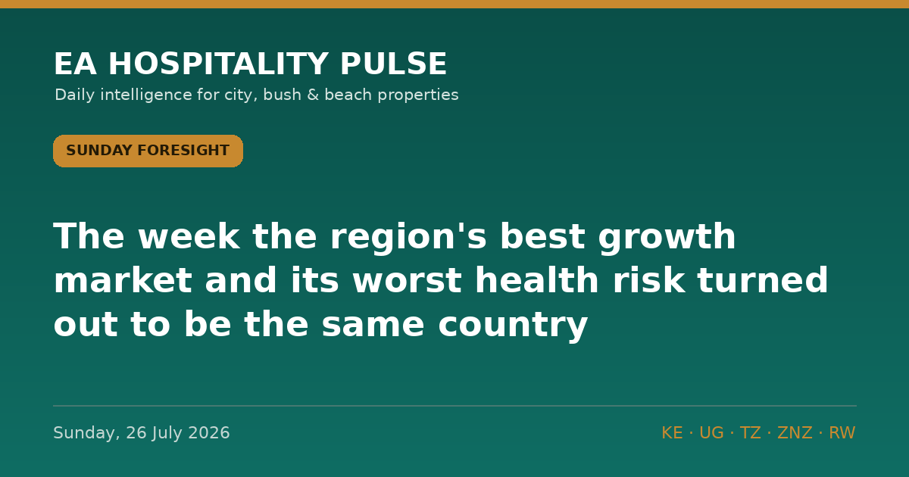

← All editionsThe week the region's best growth market and its worst health risk turned out to be the same country.
The week the region's best growth market and its worst health risk turned out to be the same country.
━━━━━━━━━
THE THEME: YOUR NEW GROWTH ENGINE HAS A HEALTH PROBLEM
Read the daily briefs back and the week looks like good news. Uganda counting down to an Ebola all-clear. Uganda Airlines committing to eight Boeing jets. Emirates going triple-daily into Nairobi. Kampala winning FHS Africa 2027. Mombasa clearing 20,000 visitors in seven days.
Now put one more number beside them. Rwanda's largest single source market in the first half of 2026 was not Europe, not the United States, not Kenya — it was the Democratic Republic of Congo, with 185,420 visitors, 12.5% of all arrivals (reported 18 July). Add Uganda, Kenya and Tanzania and roughly 42% of Rwanda's arrivals now come from four neighbours. That is the shape of this cycle's growth right across the region: regional, repeat, cheap to acquire, weakly branded.
And on 24 July the ECDC's weekly threats report put DRC's Bundibugyo outbreak at 2,473 confirmed cases and 999 deaths, spread across 47 of 140 health zones in five provinces. The region has been watching Uganda's 42-day clock. The clock that matters is the one nobody is timing — in the country that is now Rwanda's biggest customer. European leisure demand takes months to leave and months to return. Regional demand can be switched off in an afternoon by a border notice, and Rwanda has already done exactly that with its 30-day DRC travel-history rule. Cheap demand is fragile demand. Price it that way.
━━━━━━━━━
THE WEEK'S SIGNALS
1️⃣ DRC'S OUTBREAK IS GROWING, NOT SHRINKING
The ECDC's Communicable Disease Threats Report for week 30 (published 24 July) and its outbreak page (updated 22 July) cite DRC's INSP situation report of 21 July: 2,473 confirmed cases and 999 deaths, with 50 new confirmed cases and 32 deaths in a single day. Ituri alone accounts for 2,202 cases. Uganda, by contrast, has had no new case since 21 June. We have not seen this translated for operators anywhere in the trade press.
🎯 So what: Stop budgeting for a "post-declaration bounce" in late August. Uganda's all-clear resolves Uganda's outbreak, not the region's risk file. Brief your agents now that the Ugandan and Congolese situations are separate — because the advisory desks in Washington, London and Berlin are modelling DRC's curve, not Uganda's.
🏷 Bush/City | 🇺🇬 🇷🇼 Regional | Confirmed | ECDC, 24 July
2️⃣ UGANDA AIRLINES BUYS FOR A DECADE IT HASN'T UNDERWRITTEN
At Farnborough on 21 July, Uganda Airlines ordered four Boeing 737-8 MAX and four 787-9 Dreamliners — its first direct purchase from Boeing (New Vision, 22 July). The 787-9s are for Europe, Asia and the Middle East; the MAXs for Africa, the Middle East and India. The carrier currently serves 17 destinations in 13 countries from Entebbe.
🎯 So what: This is a long-haul bet placed by a country sitting at US Level 4 with Q1 Entebbe arrivals down 7.9%. Seats, not brand, will set 2027–28 Kampala rates. If you own Kampala rooms, model a scenario where lift arrives twelve months before the advisory lifts: high volume, low rate, heavy regional and Indian mix. Start building corporate and MICE contracts now while you still have pricing power.
🏷 City/Bush | 🇺🇬 | Confirmed | New Vision, 22 July
3️⃣ KENYA'S COAST IS RUNNING HOT WHILE THE INTERIOR ARGUES
Tourism CS Rebecca Miano said on Friday 24 July that more than 20,000 visitors arrived through Mombasa in the previous week. That is peak-season strength holding through a fortnight of political noise, a UK training-exercise withdrawal from Laikipia and an unresolved Mara licensing case.
🎯 So what: Coast demand is not the problem this quarter; conversion is. Hold rate through August rather than discounting into a full house, and shift any spend into September–November, where the coast is thinner than the bush.
🏷 Beach/Bush | 🇰🇪 | Confirmed | Ministry of Tourism via Kenyan press, 24 July
━━━━━━━━━
🇰🇪 14 Aug — EPRA monthly fuel review. Pump prices are frozen until this date (EPRA, 14 July). Lock transfer and generator pricing for September now, before the review.
🇹🇿 ~13 Aug — Zanzibar Commission for Tourism July arrivals (June's 69,605 landed 13 July). If July growth again prints under 10%, treat the supply wave as a rate problem, not a demand story.
🇺🇬 ~27 Aug — Uganda's 42-day countdown ends; earliest date for an end-of-outbreak declaration. Have the "we are open, here is the evidence" agent pack drafted by 20 August — not written on the day.
🇰🇪 31 Aug — KNBS monthly CPI. The wage and laundry cost line for your Q4 budget.
🇺🇬 25–27 Sept — Three days of free national park entry (UWA). Package a shoulder-season lodge stay against it now; entry fees only — game drives and permits still bill.
🇹🇿 24–27 Sept — TIMEXPO, Dar es Salaam. Corporate room-night demand; quote group rates before the end of August.
🌍 Every Friday — ECDC Communicable Disease Threats Report. The cleanest weekly read on DRC's trajectory. Next: 31 July.
🇹🇿 by 31 Oct — Our outer date for the Fair Competition Commission's ruling on A Squared Holding's acquisition of Nawiri/Asilia. If it clears unconditionally, expect consolidation pricing across the northern circuit into 2027.
━━━━━━━━━
📓 THE LEDGER
Nothing resolved this week. Seventeen calls open. The two that matter most are P001 (Uganda declared clear on or about 27 August) and P002 (the US does not lower Uganda from Level 4 within 30 days of that declaration). This week's DRC numbers make us more confident in P002, not less.
🔗 This edition on the web: https://eahospitalitypulse.com/editions/foresight-2026-07-26.html
💼 This week's Big Read on LinkedIn: https://www.linkedin.com/company/ea-hospitality-pulse/
— EA Hospitality Pulse | Daily intelligence for city, bush & beach properties
📣 Telegram (full editions) 💬 WhatsApp (daily skim) 💼 LinkedIn (the Big Read) 🗂 Every edition